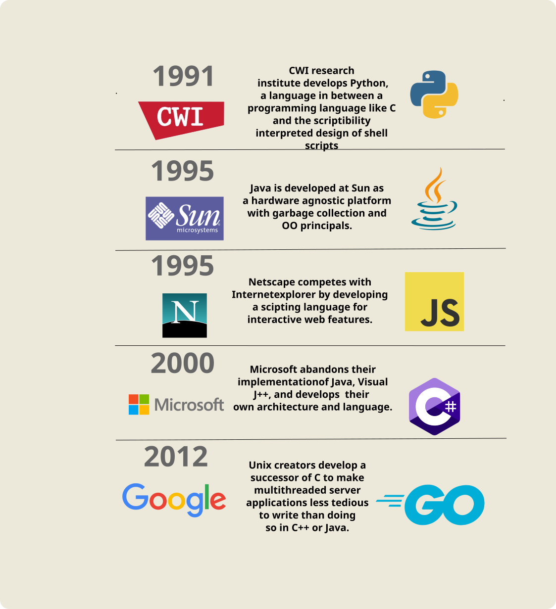

Every Programming Language Explained
📝: Video Transcript: This is the transcript for a video on my youtube channel. It should still be just as readable as an article, but you can also find the video here.
To understand the many programming languages you can choose to learn and create software with, it's important to understand, in addition to the technical details, the historical context and reason the language was created. Often, they provide a solution to a series of problems encountered in previous languages, which we'll have several examples of, starting with the creation of Java, which arose because of problems with C and C++.
See this timeline as a foreshadow for all languages to be discussed.

Java
It was known since the early 90s, a time when almost all software was written in C and C++, that the majority of security vulnerabilities come from pointer bugs and buffer overflows.
James Gosling, an engineer at Sun Microsystems, was frustrated by spending a significant amount of time hunting these pointer bugs down in large C and C++ codebases, which is a notoriosly difficult task. This eventually lead to him to create his own language and runtime with a garbage collector, which provides automatic memory management. In addition, Java has a strict object design intended to develop software with interfaces as contracts or signatures between objects. In this interview, James Gosling discusses the benefit of having clear interfaces between different components in large scale projects and preventing the "backdoor" developers make to bypass the intended object-oriented programming principles or established interfaces to instead quickly hack something together.
Another characteristic of Java, besides the language itself, is the architecture it run on, the JVM, or Java Virtual Machine is an abstraction layer agnostic to the underlying machine, which was a brilliant new idea during it's inception.
In the 90s all CPUs were very diverse and proprietary. Most applications ran on computers from different vendors, with different chips and different instruction sets such as MIPS or RISC. When writing C or C++, it had to be tailored to that specific architecture. Not only did software have to be written for specific ISAs, but it often had to be re-written for newer generations, such as transitioning from the Motorola 68010 to the 68020, which James Gosling himself spent a year on re-implementing at Sun Microsystems. He later developed the JVM as a solution where you could write it once and run anywhere.
Though people nowadays criticize Java for it's large overhead, understanding the historical context of when it was created puts it design into perspective.
Nowadays, Java powers the Android platform, web applications with Spring Boot, back-end server software, enterprise applications and much more.
Python
Moving on we have Python, created by Guido Van Rossum, working at a computing research institute in the 80s, where nearly every program they wrote was either a shell script, or in C. Wishing there was a language somewhere in the middle, that felt like a genuine programming language, like C, but was also interpreted, easy to use and concisely written like shell scripts, but without their poor readability. After creating Python, it was quickly adopted by fellow researchers for scripting tasks.
Python's advantage is it's shallow learning curve, since it's interpreted, you don't have to compile code into an separate executable file every time you want to run it, instead just save your file and run a single command. What else contributes to it's ease of use is it's syntax, which is famously known for being simple and easy, making it the preferred beginner programming language for many, often taught in schools and universities. I personally was introduced to programming in a computer class from high school, where we built a platoformer game using the Ktinker module.
Besides it's shallow learning curve, another reason for Python's wide adoption is it's massive package ecosystem. Importing code written by someone else has never been easier, and if you can imagine any use case there is surely a suitable module that exists in the half a million packages on PyPi, or Python Package Index.
According to Jetbrain Developer survey, Python currently sees use primarily in data analysis and machine learning, with a long list of other use cases including web development, system administration, and software prototyping.
Javascript
Moving on to Javascript, we have to understand the early days of the internet and very first web browsers. As the demand of websites grew from static web pages to dynamic, interactive applications, the need for a scripting language specifically for the web became apparent. The idea of code injected directly into markup was new at the time, but became necessary. Working at Netscape, which later became Firefox, Brendan Eich had a deadline of 10 days to finish the language because it had to be rolled out fast during a time critical period where the internet was booming in popularity and Netscape was in fierce competition against Microsoft's internet explorer for market share. Javascript today has evolved into what people now use as a general purpose programming language despite originally meant for small scripting tasks. The fact that Javascript is loosely typed, means it's difficult to understand what types of data are being passed around, leading to unexpected behavior, such as referencing variables that don't exist and broken code only discovered at runtime when the browser throws an error. Because of this, it was not ideal for large applications. Developers at Microsoft realized this in 2010 when they were first building their new IDE, VSCode. The need for type safety and static type checking ahead of time lead the developers to create their own superset on top of the language, which transpiles back to Javascript, this became known as Typescript.
Nowadays both Javascript and Typescript are widely adopted and still growing in popularity. For small web scripting tasks, Javascript is best, for large applications, either Typescript or Javascript paired with JSDoc to comment types works best.
Go
Next we have Golang. What lead to it's creation was massive and complex C++ code bases at Google taking minutes, and sometimes hours to compile. In addition, the turn of the century saw languages like C++, Java, and Python as unable to handle problems introduced by multi-core processors, networked systems, and modern server programs comprising tens of millions of lines of code.
Go was conceived in 2007 by engineers with many notable accomplishments, such as Unix, C, UTF-8, and the Chrome V8 Engine.
The language is intended for big teams working on large codebases. The greatest "feature" of Go is it's lack of features, this allows for readability, simplicity, and faster development time. Though you can define methods on types/structs, Go is not an object oriented language, rather a procedural language heavily influenced by C. Go was designed with modern hardware with multi-core CPUs in mind. Concurrency allows fully utilizing multiple CPU cores using goroutines for execution and channels for communication.
In this presentation by Rob Pike, he first discusses his experience attending various language conferences, which discussed newer versions and features of Java, C#, C++, PHP, and more. He realized these languages are competing by actively borrowing features from one another. This means in a sense, they are all converging into the same language. Growing in complexity while becoming more similar, meaning bloat without distinction.
Go does not try to compete, since Go V1.0, the language has been fixed, with very few features added. It is intended as a simple to use, procedural language. Without OO features, you can focus on the task at hand rather than think about the heirarchy or type system that you have to shape into the problem you're solving. There is no context switching jumping around files finding where something is inherited from. Code generally reads top to bottom in a simple manner.
Go has seen widespread adoption for cloud and network services, command line programs, and web development, with the majority of it's use being in the work place by real businesses, as opposed to a language like Rust, which sees use mostly by hobbyists and personal projects. Because of this, in addition to me just not knowing much about the language, means I will skip over it.
C
Next, we have the technology that powers big business and enterprise, dot net.
The story of C# begins in the late 90s, when Java was basically taking over the world, Microsoft quickly developed their own implementation, called Visual J++, but realized it didn't make sense to build technology based on a license from their competitor, Sun, this lead Microsoft to build their own language and architecture entirely, leading to C# and dot net.
See this quote from the creator of C#, Anders Heijlburg, in this interview.
In his words, C# was basically created for the "ease of use with visual basics rapid application devleopment with the power and expressivness of C++ "
Back in the early days, C# was used primarily for building Windows applications and was bound to to the Windows operating system running on dot net. However, nowadays cross platform is possible with dot net core. So although lot of people still associate .NET and C# with Windows only, that is no longer the case with development on Linux and MacOS being just as feasible.
Besides just desktop apps, there is much more possibility such as web apps with Blazer, mobile apps with MAUI (previously xamarin), and even game development with the Godot and Unity engine.
There is a common phenomenon of developers rejecting C# for political reasons, as in they don't like Microsoft, but the company is no longer the villain of open source like they once were. This could be a topic for a whole nother video, but to summarize, Microsoft historically had a terrible reputation with the open source community under CEOs Bill Gates and Steve Ballmer, but the company has seen a radical shift from close source and anti-competitive behavior to open source and collaborative with Satya Nadella. His first year as CEO he gave away .NET to the .NET foundation, separate from Microsoft. The rewrite of .NET to .NET Core was no longer closed source and proprietary, and nowadays, Microsoft is second in the Open Source Contributor Index behind Google.
Because of this culture and history of smaller companies and startups being anti-microsoft, you'll rarely find C# and .NET in these types of jobs, instead finding employment in larger, stable companies like banks, insurance companies and healthcare. Where startups and tech companies are likely to use anything but C#.
Employment and Usage Statistics
Before finishing off the video, I'd like to go over employment and usage statistics.
After searching for a particular language wrapped in quotes with the word "software" on Indeed, here are the results I found. You can see the Java and Python having the largest number of jobs, and Go with the lowest, although it may not be accurate because of the difficulty of searching a general word like "Go", giving false positives, this is the result of searching for Golang, but I suspect many jobs just referred to it as Go, which this search did not pick up. If you have some clever search to provide more accurate results, please leave it in the comments.
Moving on the usage statistics, I have data gathered from the yearly stack overflow survey, where professional developers report which languages they have worked with extensively in the past year. If you'd like to explore this data, you can find the website in the description.
In terms of employment, you will find C# in corporate jobs while anything else in startup/tech companies which commonly have anti-ms sentiment. Despite Dot Net Core, this culture will likely stick around.
That sums up the video and thanks for watching. Like, comment, and subscribe to support more content like this.
Additional
Reddit Post: No C# in Silicon Valley
C# is most common in big, stable businesses, banks, and insurance companies. It is rare in startups and silicon valley.